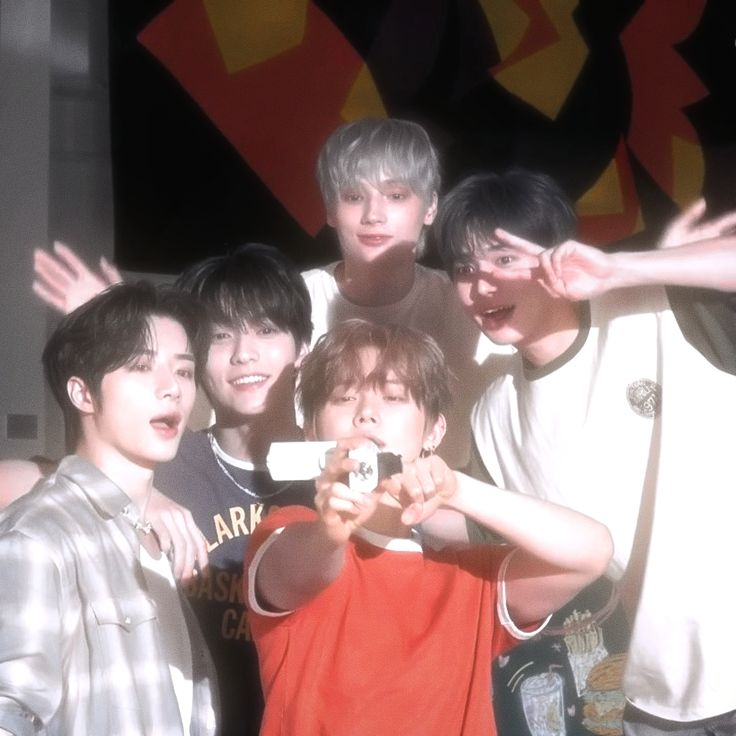
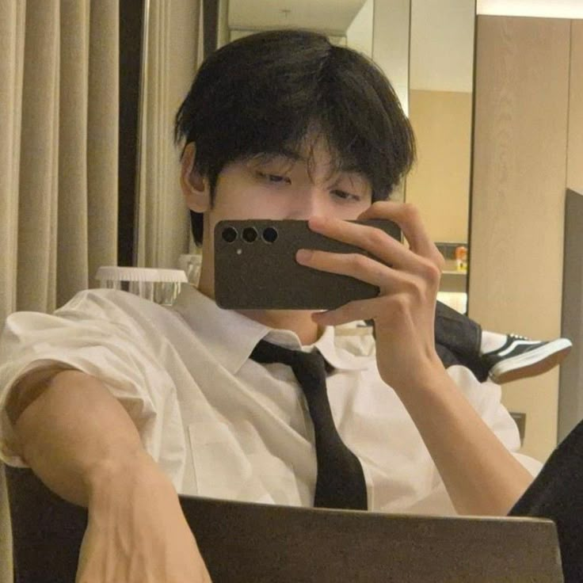
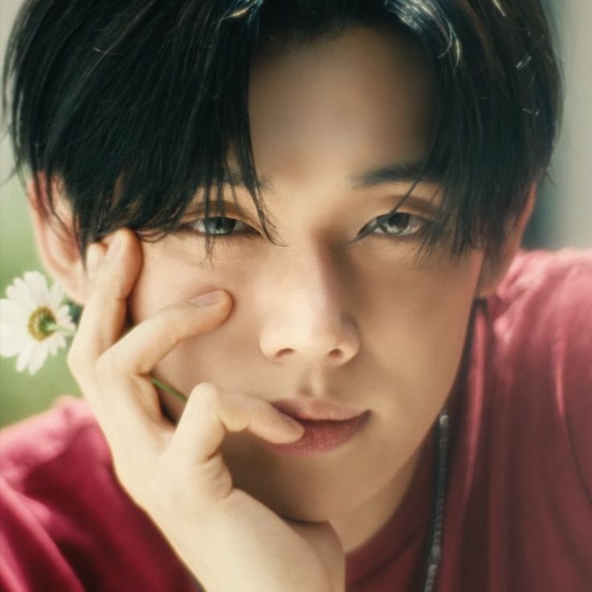
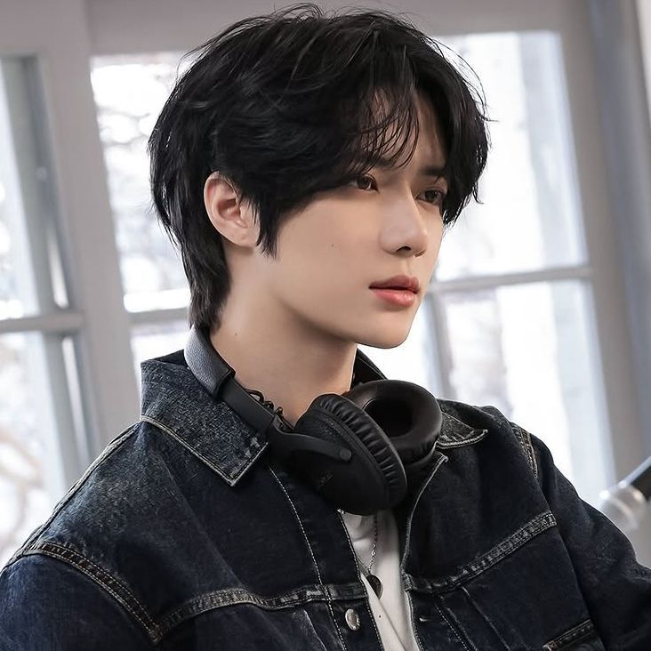
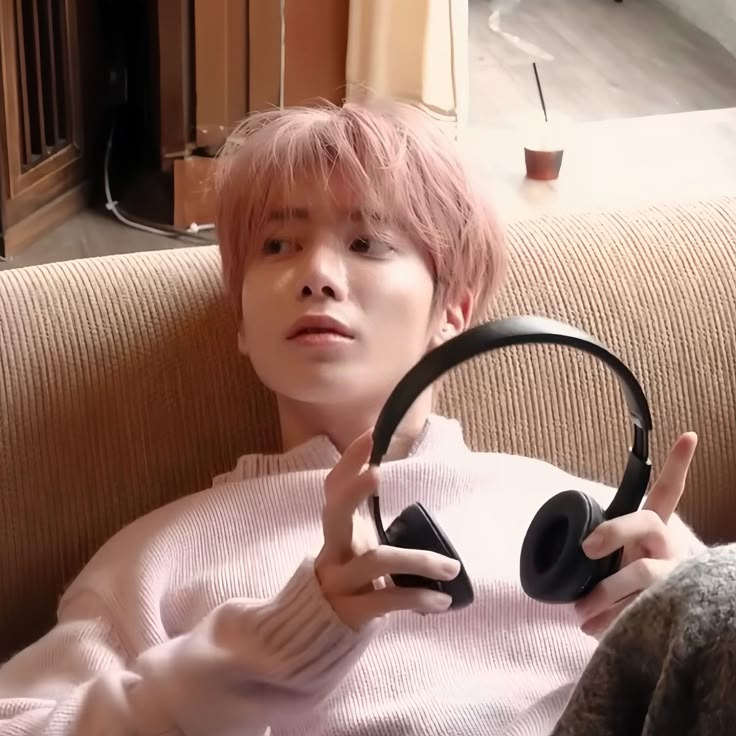
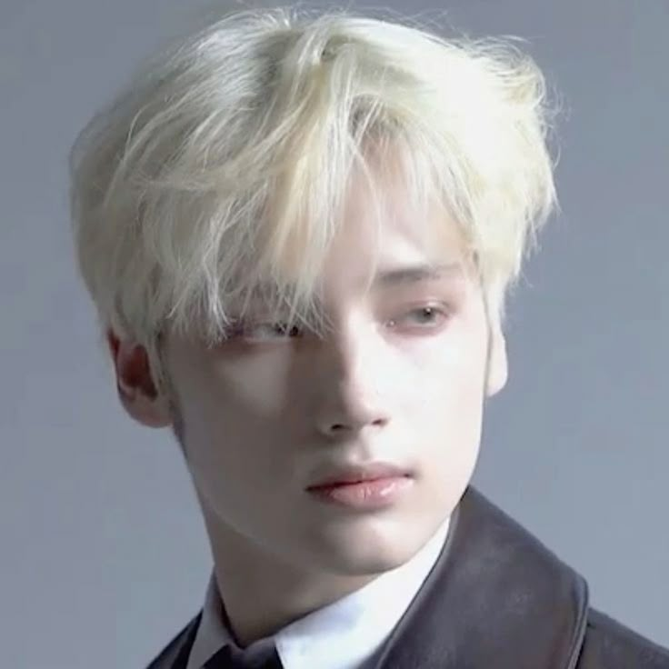

Group Name:Tomorrow X Together.
Korean Name:투모로우바이투게더.
Debut Date:March 4th, 2019.
Company:Big Hit Music.
Fandom Name:MOA(Moment Of Alwaysness).
Number of Members:5 Members.

Stage Name:Soobin(수빈).
Birth Name:Choi Soo-bin(최수빈).
English Name:Steve Choi.
Position:Leader.
Birthday:December 5th,2000.
Height:186cm.
Nationality:Korean.
He has an older brother (6 years older) and an older sister (10 years older).
His favorite colors are Sky blue and Yellow.
He can't handle spicy food.
He has a dog named "Tori".
He used to have a hedgehog named "Odi" which means long life.
His fandom name is "soobrangdan" or "soobders".
He loves almond milk.
His hobbies are reading and listening to music.

Stage Name:Yeonjun.(연준)
Birth Name:Choi Yeon-jun.(최연준)
English Name:Daniel Choi.
Position:N/A*.
Birthday:September 13th, 1999.
Height:181.5cm.
Nationality:Korean.
He's the oldest member.
He is an only child.
His favorite colors are: Purpule and Blue
His favorite food is ramyeon.
He has a dog named "Peanut".
His fandom name is "Moawajjunie".
He loves Americano.
His hobbies are dancing, skating, eating.
He has a habit of dancing while eating if the food is tasty.

Stage Name:Beomgyu(범규).
Birth Name:Choi Beom-gyu(최범규).
English Name:Ben Choi.
Position:N/A*.
Birthday:March 13th, 2001.
Height:179cm
Nationality:Korean.
He has an older brother.
His favorite colors are: Pink and White.
He has a parrot named "Toto".
He can play the guitar.
His fandom name is "Bamtori".
He calles himself "Bamgyu".
He's the cutest member.
He's the mood maker of the group.
He was the class president in highschool.
He loves strawberries.

Stage Name:Taehyun(태현).
Birth Name:Kang Tae-hyun(강태현).
English Name:Terry Kang.
Position:N/A*.
Birthday:February 5th, 2002.
Height:177cm
Nationality:Korean
He has an older sister(4 years older);
His favorite color is yellow.
He has a cat named "Hobak" Which is a Korean word that means pumpkin.
His fandom name is "Solomon".
He is left handed.
He's the smartest member
He's mature and pationate.
He's known for his boba eyes.
He can eat anything but can't handle spicy food.
He sleeps with his eyes open.
His hobbies are playing football and swimming.

Stage Name:Hueningkai (휴닝카이).
Birth Name:Kai Kamal Huening.
Korean Name:Jung Ha-won(정하원).
Chinese Name:Xiuning Kai (休宁凯).
Position:Maknae.
Birthday:August 14th,2002.
Height:183cm.
Nationality:American-Korean
He has an older sister (Huening Lea of I.MET.U) and a younger sister(Huening Bahiyyih of Kep1er)
His favorite colors are: light blue, mint, turquoise, and black.
His fandom name is "Ningdungie".
His favorite fruit is pineapple.
His father is German.
He can speak English, Korean, and Mandarin.
He can play the piano, the guitar, the flute and drums.
His hobbies is playing instruments.
He is known among the fans for being the "Diamond Maknae".